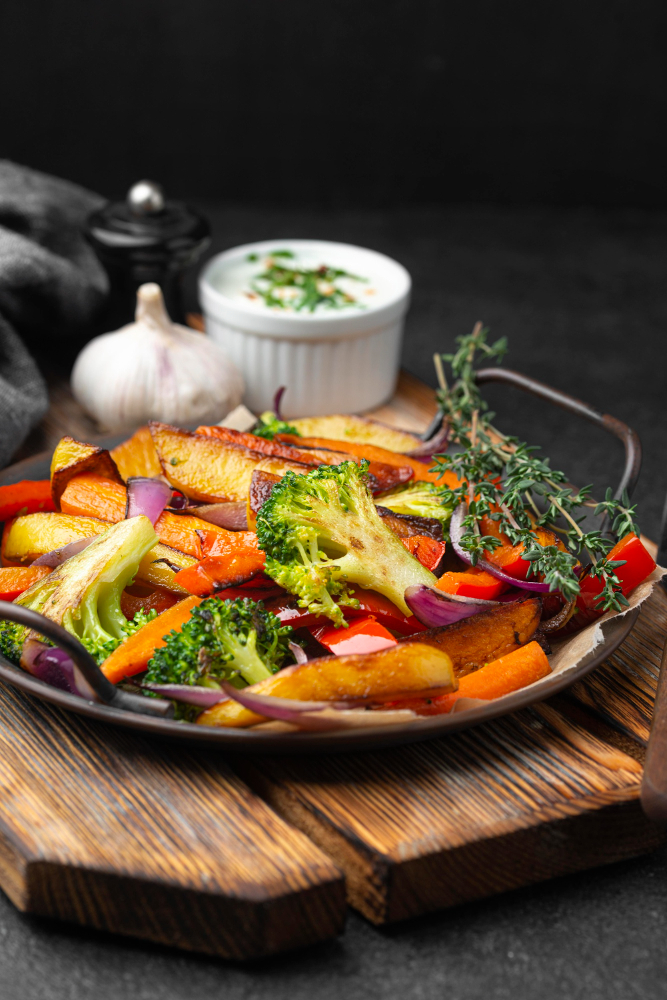
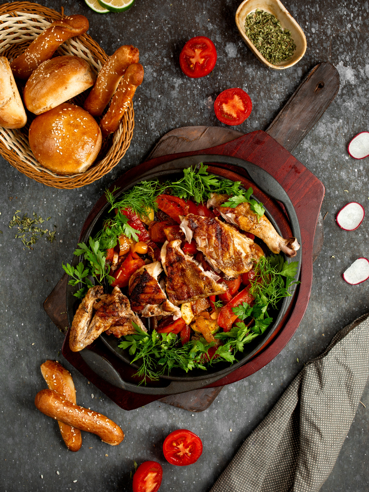
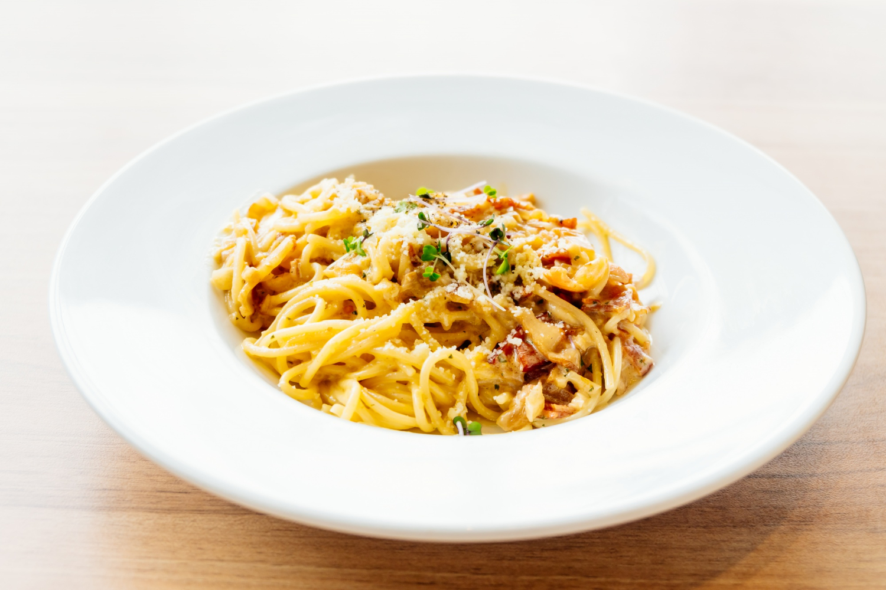
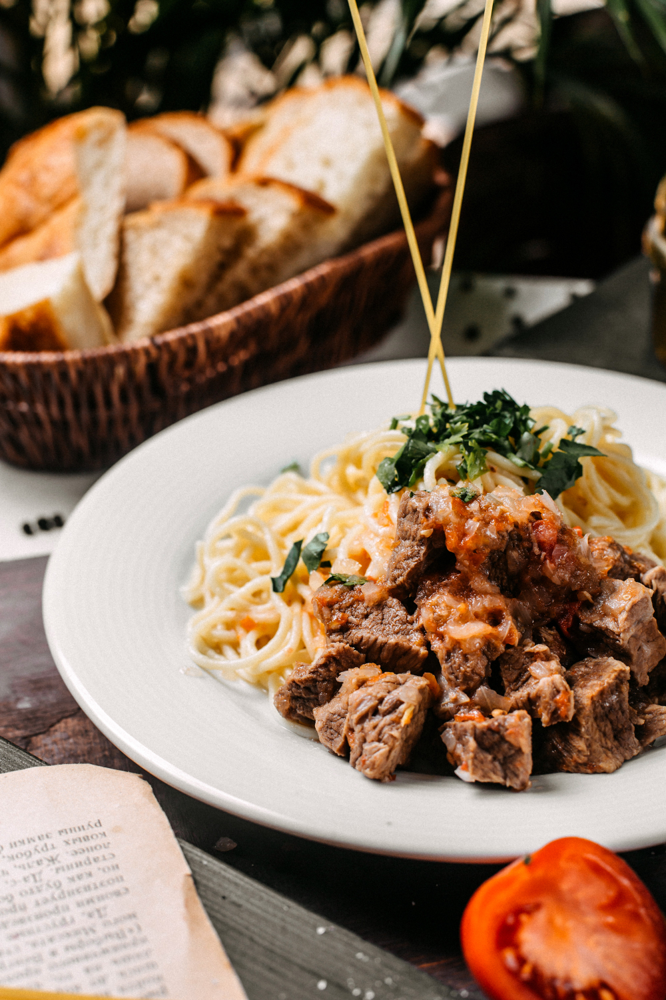
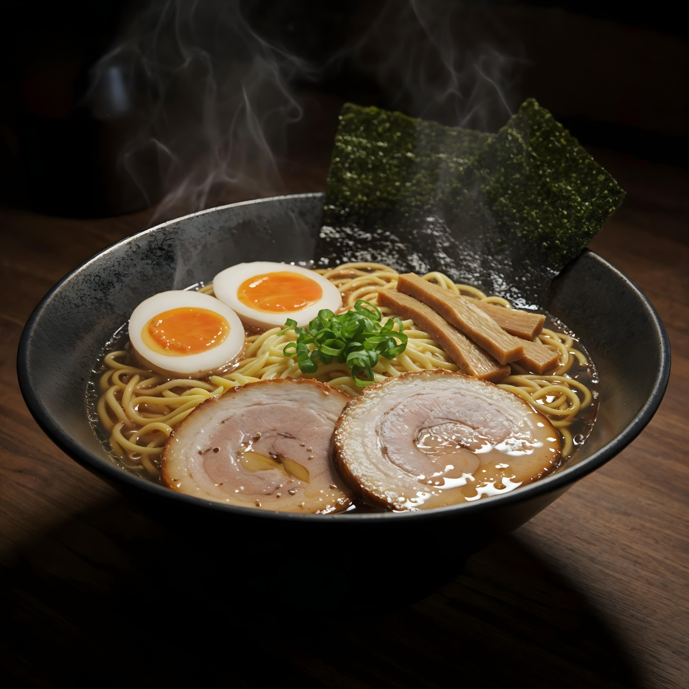

Recetas destacadas
Nivel fácil

Verduras asadas
Un acompañamiento saludable y lleno de color con hierbas aromáticas.

Pollo al horno
Pollo jugoso asado lentamente con guarnición de patatas y vegetales.
Nivel intermedio

Spaghetti Carbonara
La auténtica receta romana con guanciale, huevo y pecorino. Sin nata.

Spaghetti con ternera
Spaghetti con ternera super tierna que se deshace en la boca.
Tacos de ternera
Sabrosos tacos con carne picada sazonada, verduras frescas y tortilla de maíz.
Nivel avanzado

Ramen Tonkotsu
Caldo cremoso de cerdo cocinado durante 12 horas con fideos artesanales.